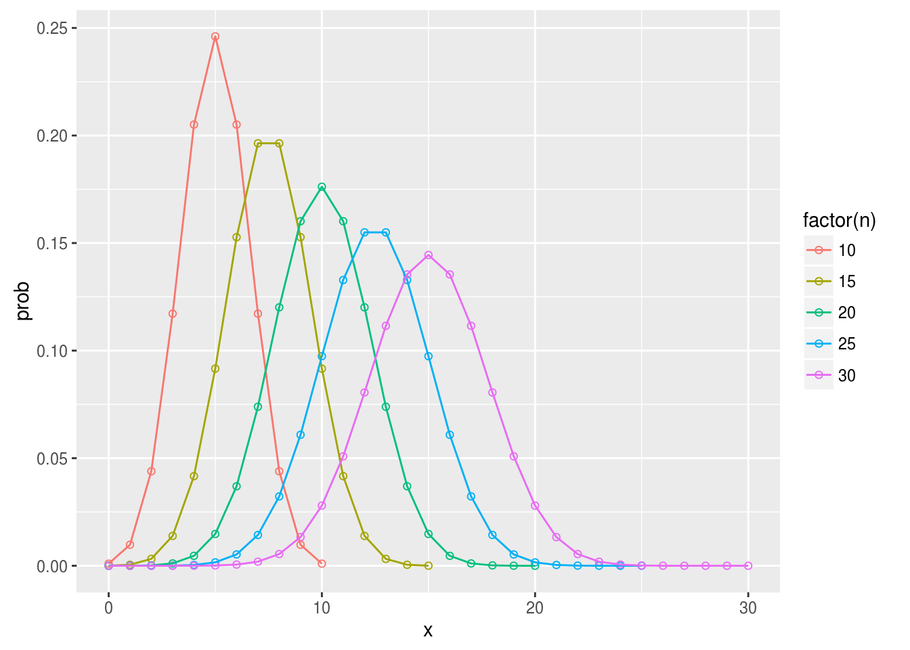

4 统计检验基础
4.1 概率分布
4.1.1 均值与方差
所有离散分布的均值和方差都可以用以下公式计算： \[\mu=\sum[xP(x)]\] \[\sigma^2=\sum[(x-\mu)^2P(x)]\]
4.1.2 二项式分布
二项式分布非常简单，形象点说白球和黑球有放回抽样。
\[ P(X=r) = {n \choose r} p^r (1-p)^{n-r}\]
二项式分布的均值： \[ \mu = np \] 方差： \[ \sigma^2 = np(1-p)\]
n越大，二项式分布越接近于正态分布：
bnd <- function(n, p=0.5) {
x <- seq(0, n)
prob <- dbinom(x, n, p)
df <- data.frame(x=x, prob=prob, n=n)
return(df)
}
require(plyr)## Loading required package: plyrbn.df <- mdply(data.frame(n=seq(10,30, 5)), bnd)
ggplot(bn.df, aes(x, prob, group=n, color=factor(n)))+geom_point(shape=1)+geom_line()
4.1.3 Poisson分布
Poisson分布是二项式分布的极限形式,用于描述单位时间或空间里随机事件发生的次数，参数 \(\mu\) 表示单位时间或空间里某事件平均发生的次数。
\[P(X=x) = \frac{e^{-\lambda}\lambda^x}{x!}\]
Poisson分布的均值和方差相等： \(\mu = \sigma^2 = \lambda\) .
Poisson分布是右偏分布，均值越大时，其对称性越好：
pd <- function(x=100, lambda) {
x <- seq(0, x)
prob <- dpois(x, lambda)
df <- data.frame(x=x, prob=prob, lambda=lambda)
return(df)
}
p.df <- mdply(data.frame(lambda=seq(10,60, 10)), pd)
ggplot(p.df, aes(x, prob, group=lambda, color=factor(lambda)))+geom_point(shape=1)+geom_line()+facet_wrap(~lambda)+theme(legend.position="none")
4.1.4 正态分布
正态分布是边续型分布，我们关心的不是某个值的概率，而是概率密度函数下的面积，它的概率密度函数是： \[ f(x) = \frac{1}{\sqrt{2\pi\sigma^2}} e^{-(x-\mu)^2/2\sigma^2}\] 所有的正态分布，都可以标准化为均值为0，标准误为1的标准正态分布： \[ f(z) = \frac{1}{\sqrt{2\pi}} e^{-z^2/2}\] 其中 \(z=\frac{x-\mu}{\sigma}\) .
4.1.5 t分布
如果总体是正态分布，那么样本均值的分布也呈正态，William S. Gosset发现了t分布，它在参数估计和统计检验上，比正态分布要好，在大样本上做的和正态分布一样好，而在小样本上，比正态分布好很多。
require(plyr)
x <- seq(-3, 3, length=100)
pn <- dnorm(x)
pn.df <- data.frame(x=x, prob=pn)
get.pt <- function(x, df) {
prob <- dt(x, df=df)
dd <- data.frame(x=x, prob=prob, df=df)
return(dd)
}
para <- data.frame(x=rep(x, 4), df= rep(c(3, 5, 15, 30), each=length(x)))
pt.df <- mdply(para, get.pt)
require(ggplot2)
ggplot(pt.df, aes(x, prob))+geom_line(aes(group=df, color=factor(df)))+geom_line(data=pn.df)上图画了自由度为3，5，15和30的t分布，以及正态分布，随着自由度的增加，t分布越来越接近于正态分布，很多时候，我们只有小样本，那么可以说t分布是正态分布的保守版本.从图中可以观察到，t分布中心比较平，而尾巴比较”胖“，特别是自由度较小的时候，t分布的尾巴会比正态分布长，那么同样一个值，t分布计算出来的p-value会比正态分布大一点。
dnorm(2)## [1] 0.05399097dt(2, df=5)## [1] 0.065090314.1.6 卡方分布
k个独立的标准正态分布变量的平方和服从自由度为k的 \(\chi^2\) 分布，卡方分布常用于假设检验和置信区间的计算。
卡方分布被用于计算拟合优度，于观察到的分布和假设成立的分布之间；估算总体标准偏差(population standard deviation)和样本标准偏差(sample standard deviation)的区间。
pc <- function(x=50, df) {
x <- seq(0, x)
prob <- dchisq(x, df)
pc.df <- data.frame(x=x, prob=prob, df=df)
return(pc.df)
}
pc.df <- mdply(data.frame(df=c(3,6,9,18)), pc)
ggplot(pc.df, aes(x, prob, group=df, color=factor(df)))+geom_point(shape=1)+geom_line()+ggtitle("Chi-Square Distribution")### F分布 F分布也是基于自由度，所以也是一个分布家族，它的自由度有两个，分别对应于分子项和分母项，因为F值是方差的比值，所以只有正值，函数峰在1左右（1代表两个方差是相等的），非对称分布，呈现右偏。
pff <- function(x=seq(0,6,0.1), df1, df2) {
y <- df(x, df1, df2)
pf.df <- data.frame(x=x, prob=y, df1=df1, df2=df2)
return(pf.df)
}
pf.df <- mdply(data.frame(df1=c(3,4,10), df2=c(10, 15, 29)), pff)
ggplot(pf.df, aes(x, prob, group=interaction(df1,df2), color=interaction(df1, df2)))+geom_line()+geom_vline(xintercept=1, linetype="dashed") + theme(legend.position=c(.8, .8))如果F值小于1，使用左尾巴进行p值计算，大于1则右尾巴进行p值计算，很多人抛弃使用左尾巴进行p值计算，只需要把分子分母倒过来就行，当然自由度也要跟着倒过来。
虽然使用单侧来计算，但p值的计算通常是two-tailed，因为F值是两个方差的比值，不管两个均值的差是正的还是负的，方差都是正的。从这个角度上看，计算出来的单侧p值要乘以2，要把正和负的均值差都考虑在内，这是双侧检验。 假如F值为4.5，自由度为10和15，p值应该这样算：
2*(1-pf(4.5, 10, 15))## [1] 0.009214664.2 统计检验与p值
4.2.1 零假设
一切都是偶然的，真理只存在于概率分布中
---《女士品茶》统计分析无法证明一个假设的真实性，它所提供的是假设存在的可能性，可能性（概率）是我们选择支持或反对假设的证据。
要证明一个假设是比较困难的，比如想证明“暨大图书馆前面的广场上有鸟”，一只鸟都没有看到，是不够的，它有可能就藏在某个树丛中。相反要推翻一个假设，却是相对要容易些，要推翻“暨大图书馆前面的广场上没有鸟”，我们没找到鸟，当然没有足够的证据去推翻它，但是但凡发现有一只鸟，这个假设就可以被推翻。
所以在统计学上，假设都是以“无罪假设”出现，称之为零假设(null hypothesis)，假设是关于总体参数的论断，而零假设总是“无罪“论断，如没有差别，没有效果，没有变化，没有关系等，而备择假设总是”有罪“论断。
我们以零假设为基础，计算概率(p值)，做出统计推断。如果p值小于阈值，则拒绝零假设，接受备择假设。
有时候会有学生找我说，帮忙算个p值，我就会问，你的零假设是什么？这句话等同于问“你想干嘛？”，神奇的是，有些时候有些人就真的不知道自己想干嘛！
4.2.2 P值
4.2.2.1 概率密度函数
假设不知道概率分布，我们收集了很多数据，那么这个数据可以用直方图表示出来，如果是离散型的数据，我们可以计算每个取值的概率值，比如二项式分布：
dbinom(3, 10, 0.2)## [1] 0.2013266choose(10,3)*0.2^3*0.8^7## [1] 0.2013266p <- dbinom(0:10, 10, .2)
print(p)## [1] 0.1073741824 0.2684354560 0.3019898880 0.2013265920 0.0880803840
## [6] 0.0264241152 0.0055050240 0.0007864320 0.0000737280 0.0000040960
## [11] 0.0000001024sum(p)## [1] 1如果数据是连续型的，就比较不好办了，它有无数个可能的取值，每一个精确的取值，概率都是0。我们只能计算某个区间的概率。我们把连续型的数据用直方图表示，把它当成离散型，就可以计算每个区间(bin)的概率，我们可以这样做处理，不断细化直方图的区间，当bin趋于0的时候，就可以得到每一取值的概率。事实上当bin趋于0的时候，直方图就变得光滑了，形状如果density curve。而density的计算，正是bin的概率除以bin的宽度，所以对于连续型函数，概率分布用的就是概率密度函数。
4.2.2.2 p value
我们有了概率密度函数，假设我们的数据来自标准正态分布，而观察值是3，那就可以计算出p值了，p值计算的是随机观察到如此极限的值（2）以及更极限的值（>2）的概率。
x=seq(-4, 4, length=500)
d <- data.frame(x=x, prob=dnorm(x))
ggplot(d, aes(x, prob, fill=x>=2))+geom_area()+scale_fill_manual(values=c("FALSE"="steelblue", "TRUE"="red"))+theme(legend.position="none")也就是图中红色部分的面积。通常以一个阈值（比如0.05）来区分是否具有统计学显著性，这是以前查表时代的东西，现在统计学软件的大量使用，直接报p值比较好。
pnorm(2, lower.tail=F)## [1] 0.02275013上面红色部分算出来的p值是0.02275，我们可以拒绝总体是标准正态分布的零假设，这样的观察值来自于标准正态分布的概率是0.02275，也就是有0.02275的可能性零假设是对的，这就是我们拒绝零假设所犯错的可能性，称之为I类错误。
另外如果p值比较大于阈值，没有足够的证据拒绝零假设，有可能比如样本量太少等各种原因造成的，无法拒绝错误的零假设称之为II类错误。

I类和II类错误
广为接受的 \(\alpha\) 水平是0.05，而power水平是0.80。
4.3 Confidence Intervals
4.3.1 均值置信区间
使用样本均值估计总体均值很容易，但要给出一个置信区间，相对就要困难些，因为这取决于数据的分布，如果数据是正态分布的，或者是大样本，那也比较容易，如果 \(\sigma\) 已知，使用正态分布，如果未知，使用t分布。
但是如果数据不呈正态，样本量又比较小（n < 30)的情况下，那只能使用非参或bootstrapping的方法了，相对就复杂点。
4.3.1.1 中心极限定理
get_sample_mean <- function(size, population, n=1000) {
sapply(1:n, function(i) {
x <- sample(population, size)
mean(x)
})
}
pp <- c(rnorm(1000, 0, 1), rnorm(100, 100, 1))
lsm <- get_sample_mean(50, pp)
ssm <- get_sample_mean(10, pp)
y <- get_sample_mean(5, rnorm(1000))
par(mfrow=c(1,3))
hist(ssm, breaks=30, main="sample means distribution\nfrom non-Normal distribution\n(sample size = 10)")
hist(lsm, breaks=30, main="sample means distribution\nfrom non-Normal distribution\n(sample size = 50)")
hist(y, breaks=30, main="sample means distribution\nfrom Normal distribution\n(sample size = 5)")只要样本量足够大，均值的分布都将呈现正态分布，不管样本来源于什么样的数据分布中，这就是中心极限定理，这也是为什么正态分布令人着迷之处。
从上面的图中，我们可以看到，如果样本量足够大，即使总体不呈正态，样本均值分布符合中心极限定理，也呈正态分布；如果样本量不够大，则数据来源必须是正态分布，均值的分布才是呈正态分布的。
4.3.1.2 样本均值标准误
从总体抽出一个样本，可以计算样本均值，我们通常使用样本均值来估计总体均值，反复抽样，每次得到的样本均值肯定是稍有不同的，我们需要用方差来量化这种不确定性，如果总体本身是正态分布，或者样本足够大，那么均值呈正态分布，均值为总体均值，而标准误差是我们需要估计的，有了标准误差，就可以通过正态分布，给出置信区间。
对于标准误差，有一词叫标准差（standard deviation, SD）还有一词叫标准误（standard error, SE），很容易混淆，我们拿到一个样本，对样本观察值离散程度的量化是SD: \(sd(x)\) ，而我们可以从很多个样本中得到很多个均值，这些均值的离散度用SE来量化， 也就是 \(SE=sd(\bar{x})\) 。Campbell和Machin在他们的著作《Medical Statistics: a Commonsense Approach》中有一句话，值得铭记于心：
If the purpose is Descriptive use standard Deviation; if the purpose is Estimation use standard Error.对于均值的SE，通常称之为SEM（standard error of the means）。SEM显然和总体方差 \(\sigma^2\) 以及样本量n有关，总体离散度高，SEM也会大一些；另一方面，样本量越大，对总体的估计就越好，SEM就会越小，这个还是很好理解的。
x1 <- get_sample_mean(20, rnorm(1000, sd=1))
x2 <- get_sample_mean(20, rnorm(1000, sd=3))
x3 <- get_sample_mean(50, rnorm(1000, sd=3))
par(mfrow=c(1,2))
hist(x2, breaks=30, col="green", main="sample means distribution", xlab="Means")
hist(x1, breaks=30, col="red", add=TRUE)
legend(legend=c(expression(paste(sigma==1)), expression(paste(sigma==3))), fill=c("red", "green"), "topright")
hist(x2, breaks=30, col="green", main="sample means distribution", xlab="Means")
hist(x3, breaks=30, col="red", add=TRUE)
legend(legend=c("n=10", "n=50"), fill=c("green", "red"), "topright")从上面的仿真抽样可以看到，SEM和 \(\sigma\) 呈正相关，\(\sigma\) 越大，SEM越大；而和sample size呈负相关，sample size越大，SEM越小。 实际上： \[\sigma_{\bar{x}}^2=\frac{\sigma^2}{n}\] 也就是： \[\sigma_{\bar{x}}=\sqrt{\frac{\sigma^2}{n}} = \frac{\sigma}{\sqrt{n}}\] 通常情况下，总体 \(\sigma\) 是未知的，使用样本sd来估计，那么SEM为： \[s_{\bar{x}} = \frac{s}{\sqrt{n}}\]
我们可以通过仿真抽样进行验证：
## generate 1000 sample with sample size 100
a = sapply(rep(100, 1000), rnorm)
a.mean = colMeans(a)
## estimate SEM by simulation
sd(a.mean)## [1] 0.1003199## estimate SEM by sigma/sqrt(n), sigma = 1
1/sqrt(100)## [1] 0.1## estimate SEM by sample 1
sd(a[, 1])/sqrt(100)## [1] 0.099548464.3.1.3 使用正态分布估计置信区间
样本均值呈正态分布的情况下，可以使用正态分布和t分布来估计置信区间，用那种方法，取决于总体参数 \(\sigma\) 是否已知。
知道 \(\sigma\) 的情况下，使用正态分布。 \[ (\bar{x}-z_{\alpha/2}SEM) < \mu < (\bar{x}+z_{\alpha/2}SEM)\] 也就是： \[ (\bar{x}-z_{\alpha/2}\frac{\sigma}{\sqrt{n}}) < \mu < (\bar{x}+z_{\alpha/2}\frac{\sigma}{\sqrt{n}})\] 这里从 \(\mu=1, \sigma=3\) 的总体中随机抽一个样本，计算95%的置信区间：
set.seed(123)
n <- 100
sigma <- 3
alpha <- 0.05
x <- rnorm(n, mean=1, sd=sigma)
m <- mean(x)
sem <- sigma/sqrt(n)
#margin of error
me <- qnorm(1-alpha/2)*sem
msg <- paste((1-alpha)*100,"% ", "Confidence Interval: [", round(mean(x)-me, 3), ", ", round(mean(x)+me,3), "]", sep="")
print(msg)## [1] "95% Confidence Interval: [0.683, 1.859]"4.3.1.4 使用t分布估计置信区间
在很多情况下 \(\sigma\) 是未知的，那么就得使用t分布来进行置信区间估计， 形式和正态分布是一样的，只不过用t值替代了z值，因为t分布的尾巴比正态长，所以置信区间的宽度会大一些，特别是在自由度小的时候。 \[ (\bar{x}-t_{\alpha/2}SEM) < \mu < (\bar{x}+t_{\alpha/2}SEM)\] 在未知 \(\sigma\) 的情况下，使用sd来估计 \(\sigma\) ，最终公式为： \[ (\bar{x}-t_{\alpha/2}\frac{s}{\sqrt{n}}) < \mu < (\bar{x}+t_{\alpha/2}\frac{s}{\sqrt{n}})\]
t.test()函数进行t检验时，会计算出置信区间:
t.test(rnorm(100))##
## One Sample t-test
##
## data: rnorm(100)
## t = -1.1122, df = 99, p-value = 0.2688
## alternative hypothesis: true mean is not equal to 0
## 95 percent confidence interval:
## -0.29941792 0.08432432
## sample estimates:
## mean of x
## -0.10754684.3.1.5 误差幅度
置信区间的估计，就是 \(\bar{x}\) \(\pm\) \(z_{\alpha/2}\sigma_{\bar{x}}\) ，\(z_{\alpha/2}\sigma_{\bar{x}}\)这个量被称之为误差幅度（margin of error）: \[E=z_{\alpha/2}\sigma_{\bar{x}}\] 很容易可以推导出： \[ n=(\frac{z_{\alpha/2}\sigma_{\bar{x}}}{E})^2\]
E是n的函数，样本量n越大，E就越小；反过来，n也是E的函数，如果我们想要把误差幅度限制在一个比较小的范围，那么就要加大样本量，上面的公式就给出了对于样本量的估计。
estimateSampleSize <- function(E, sigma, alpha=0.05) {
## E is the margin of error
n <- ((qnorm(alpha/2)*sigma)/E)^2
ceiling(n)
}
estimateSampleSize(3, 10)## [1] 434.3.2 比例的置信区间
很多数据会以比例的形式出现，比如对某事件进行调查，会报道出支持和反对的比例；生物苦逼娃可能会计算不同形态的细胞比例。 比例的置信区间，由以下公式给出： \[ (\hat{p} - E) < p < (\hat{p} + E)\]
其中E是误差幅度， \(\hat{p}\) 是样本计算出来的比例，而p是总体比例。 E通过以下公式计算： \[ E = z_{\alpha/2}\sqrt{\frac{\hat{p}(1-\hat{p})}{n}}\] 这种情况符合二项式分布，而n又比较大，所以可以用正态分布来估计，那么这公式就很好理解了，和均值的误差幅度估计是一样的，都是 \(z_{\alpha/2}SE\) ，而SE是 \(\sigma/\sqrt{n}\) 。我们知道二项式分布 \(\sigma^2 = np(1-p)\) ，这里p是未知的，使用样本统计量 \(\hat{p}\) 来估计，就可以推出E的计算公式。
假设数了1000个细胞，700个是梭形的，我们想估计梭形细胞所点比例的95%置信区间，就可以通过以上公式计算： \[ E = 1.96\sqrt{\frac{(0.7)(0.3)}{1000}} = 1.96\sqrt{\frac{0.21}{1000}} = 1.96\sqrt{0.00021} = 0.0284\]
(0.7 - 0.0284) < p < (0.7 + 0.0284)
95%置信区间为 [0.6716, 0.7284]
4.3.3 方差和标准差的置信区间
通常拿样本SD来估计总体SD，要给出包含总体SD的置信区间，需要用到卡方分布。
假设我们从正态分布的总体中抽出样本量为n的样本，总体的方差为 \(\sigma^2\) ，那么样本方差为 \(s^2\) 的函数符合卡方分布： \[ \chi^2 = \frac{(n-1)s^2}{\sigma^2}\] 卡方是不对称分布，所以置信区间也是不对称的，需要分别找出左侧和右侧的临界值（critical value）。
假设n是100，那么自由度是99，我们要计算95%的置信区间，需要分别计算左侧0.025和右侧0.025的临界值：
qchisq(0.025, 99, lower.tail=TRUE)## [1] 73.36108qchisq(0.025, 99, lower.tail=FALSE)## [1] 128.422这两个数称之为卡方左右值 \(\chi_{L}^2\) 和 \(\chi_{R}^2\) ，那么标准差的置信区间为： \[\sqrt{\frac{(n-1)s^2}{\chi_{R}^2}} < \sigma < \sqrt{\frac{(n-1)s^2}{\chi_{L}^2}}\]
4.3.4 均值差的置信区间
我们记两组数据为 \(x_1, x_2\) ，其均值分别为 \(\bar{x_1}, \bar{x_2}\) ，总体均值为 \(\mu_1, \mu_2\) ，总体均值差为 \(\mu_d = \mu_1 - \mu_2\) 。 ### 成对数据均值差的置信区间 假设想检验某药对某病是否有用，我们观察一群病人，用药前和用药后的指标，这样的数据就是成对数据，用药前和用药后的数据是相关的。 假设 \(d_i\) 是第i个病人用药前后的差值： \[ d_i = x_{1i} -x_{2i} \]
那么统计量 \(\bar{x_1}, \bar{x_2} = \bar{d}\) 。
成对数据均值差 \(\bar{x_1}, \bar{x_2}\) 的分布就变成了差值均值 \(\bar{d}\) 的分布，问题就变成了均值置信区间的估计，可以直接套用t分布的估计公式： \[ (\bar{d}-t_{\alpha/2}SEM) < \mu_d < (\bar{x}+t_{\alpha/2}SEM)\]
问题在于估计标准误SEM，样本均值的标准误前面已经讲过 \(SEM=\frac{s}{\sqrt{n}}\) ，这里的观察值为 \(d_i\) ，于是： \[ SE_\bar{d} = \frac{s_d}{\sqrt{n}}\]
所以成对数据均值差 \(\mu_d\) 的置信区间为： \[ (\bar{d}-t_{\alpha/2}\frac{s_d}{\sqrt{n}}) < \mu_d < (\bar{d}+t_{\alpha/2}\frac{s_d}{\sqrt{n}})\]
4.3.4.1 两样本均值差的置信区间
如果两组数据是独立的，那么情况要复杂一些，但原理还是一样，只要是正态分布或者样本量足够大，那么均值差的分布就呈现正态分布，依然是使用t分布来做参数估计： \[ ((\bar{x_1} - \bar{x_2})-t_{\alpha/2}SEDM) < \mu_1 - \mu_2 < ((\bar{x_1} - \bar{x_2})+t_{\alpha/2}SEDM)\] 其中SEDM，代表standard error of difference of means。
4.3.4.1.1 方差相同
方差相同的情况下，对SEDM的估计就比较容易，把两个样本的方差合并(pool)，合并方差(pooled variance)： \[s_p^2=\frac{(n_1-1)s_1^2+(n_2-1)s_2^2}{n_1+n_2-2}\] 继而SEDM由以下公式计算： \[SEDM = \sqrt{\frac{s_p^2}{n_1}\frac{s_p^2}{n_2}}\]
自由度为 \(n_1+n_2-2\) .
4.3.4.1.2 方差不同
方差不同使用Welch方法，不对方差进行合并。 \[SEDM = \sqrt{\frac{s_1^2}{n_1}\frac{s_2^2}{n_2}}\]
自由度通过Welch-Satterhwaite公式计算： \[ df = \frac{(s_1^2/n_1+s_2^2/n2)^2}{\frac{(s_1^2/n_1)^2}{n_1-1}+\frac{(s_2^2/n_2)^2}{n_2-1}}\]
4.3.5 相关性置信区间
Pearson correlation coefficient的置信区间，参考相关性一节。